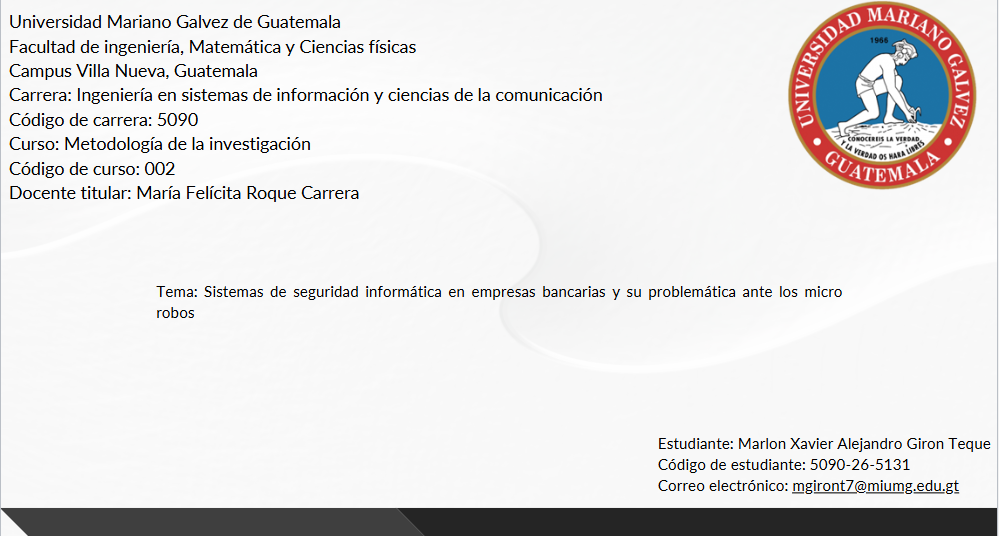
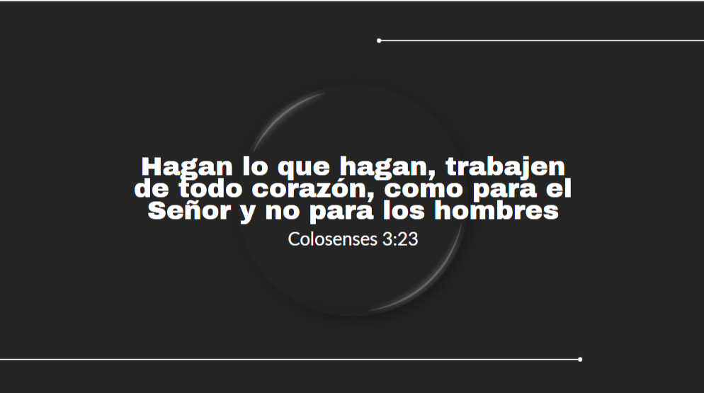
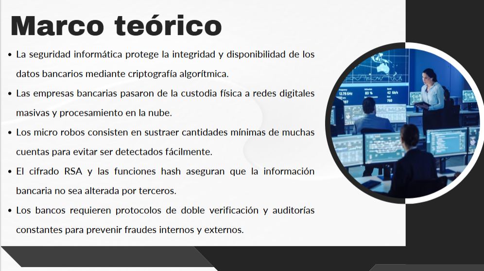

En este proyecto se desarrolló una simulación de tesis como parte del curso de metodología, enfocada en la aplicación de técnicas de investigación. Se realizó la recolección de datos mediante encuestas a estudiantes y entrevistas a docentes, lo que permitió analizar información real dentro del entorno educativo. El trabajo incluyó la organización de resultados, interpretación de datos y elaboración de conclusiones, con el objetivo de comprender el proceso de investigación y su aplicación en proyectos académicos.


